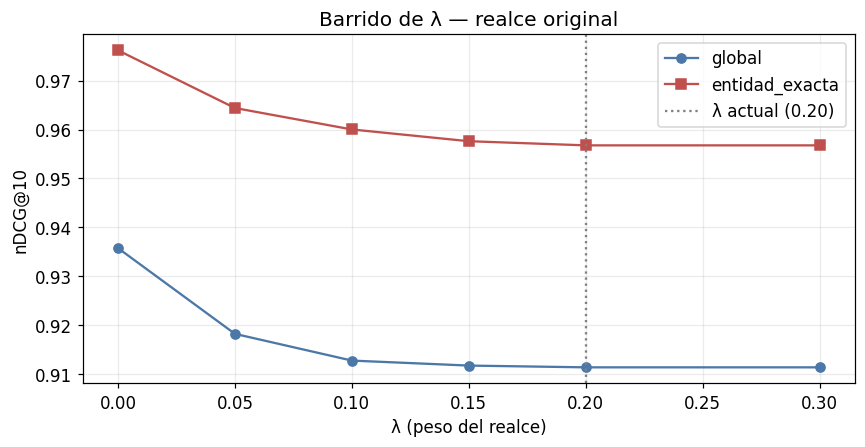
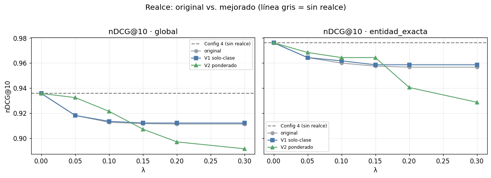

02 · Diagnóstico y retuning del realce por entidad#
Alcance: entender por qué la Config 5 (Híbrido + ontología + realce por entidad) empeora respecto a la Config 4, y proponer una versión mejorada o su descarte para v1 (punto 2 de la entrega).
1. Contexto y objetivos#
En la escalera, el realce suave por entidad — s_final = s_RRF · (1 + λ·1_entidad) con
λ = 0.20 — bajó el nDCG@10 global de 0.936 (Config 4) a 0.911 (Config 5). El realce
pretende subir documentos cuya entidad coincide con la consulta, así que un deterioro
indica un problema de diseño del indicador o de calibración de λ. Objetivos:
Diagnosticar el mecanismo: ¿el indicador de entidad es discriminativo o se activa para demasiados documentos?
Barrer λ ∈ {0.05, 0.10, 0.15, 0.20, 0.30}.
Medir precision/recall del detector de entidad.
Proponer y evaluar un realce mejorado.
Recomendación clara: mantener, modificar o descartar en v1.
2. Preparación, datos y núcleo de recuperación#
Núcleo de recuperación (idéntico en todos los notebooks de la entrega)#
Para que cada notebook sea autónomo y reproducible, se define aquí todo el código de recuperación y evaluación: librerías, carga de datos, métricas, índices (BM25 y denso), fusión RRF, detector de entidades, el motor de las cinco configuraciones y la estadística. No se importa nada de experimentos/lib.
# --- Librerías y utilidades base ---
import json, sys, time, math, re, unicodedata, warnings
from collections import Counter
from pathlib import Path
import numpy as np
import pandas as pd
import matplotlib.pyplot as plt
import yaml
from scipy import stats as sp_stats
warnings.filterwarnings("ignore")
pd.set_option("display.float_format", lambda x: f"{x:.3f}")
plt.rcParams.update({"figure.dpi": 110, "font.size": 11, "axes.grid": True, "grid.alpha": 0.25})
# Localiza la raíz del proyecto y la carpeta de datos del experimento.
RAIZ = Path.cwd()
if RAIZ.name == "notebooks":
RAIZ = RAIZ.parent
EXP = RAIZ / "experimentos"
cfg = yaml.safe_load((EXP / "config.yaml").read_text(encoding="utf-8"))
SEMILLA = cfg["evaluacion"]["semilla"]
np.random.seed(SEMILLA)
print("Encoder:", cfg["encoder"]["tipo"], "→", cfg["encoder"]["modelo_st"])
print("BM25:", cfg["bm25"], "| RRF k =", cfg["fusion"]["k_rrf"], "| realce λ =", cfg["realce"]["lambda"])
Encoder: sentence-transformer → jinaai/jina-embeddings-v3
BM25: {'k1': 1.5, 'b': 0.75} | RRF k = 60 | realce λ = 0.2
# --- Carga de datos ya construidos por el pipeline reproducible (make all) ---
# El corpus lo produce experimentos/preprocess_corpus.py; las consultas y juicios,
# experimentos/generar_consultas.py (protocolo known-item). Aquí solo se leen.
def cargar_jsonl(ruta):
return [json.loads(l) for l in Path(ruta).read_text(encoding="utf-8").splitlines() if l.strip()]
docs = cargar_jsonl(EXP / cfg["rutas"]["corpus"])
consultas = cargar_jsonl(EXP / cfg["rutas"]["consultas"])
qrels = {r["id"]: r["relevancia"] for r in cargar_jsonl(EXP / cfg["rutas"]["qrels"])}
ontologia = yaml.safe_load((EXP / cfg["rutas"]["ontologia"]).read_text(encoding="utf-8"))
tiene_gold = lambda q: any(g > 0 for g in q.values())
con_gold = [c for c in consultas if tiene_gold(qrels.get(c["id"], {}))]
estratos = sorted({c["estrato"] for c in consultas})
print(f"{len(docs)} documentos | {len(consultas)} consultas | {len(con_gold)} con gold")
print("Estratos:", {e: sum(1 for c in consultas if c['estrato']==e) for e in estratos})
17 documentos | 51 consultas | 40 con gold
Estratos: {'ambigua': 13, 'competencias': 11, 'documento_largo': 10, 'entidad_exacta': 17}
# --- Métricas de recuperación (nDCG, Recall, MRR, P@k, AP) con ganancia exponencial ---
def _grado(qrel, doc): return float(qrel.get(doc, 0.0))
def dcg(ranking, qrel, k):
return sum((2.0**_grado(qrel, d) - 1.0) / math.log2(i + 1)
for i, d in enumerate(ranking[:k], 1) if _grado(qrel, d) > 0)
def ndcg(ranking, qrel, k):
ideal = sorted((g for g in qrel.values() if g > 0), reverse=True)
idcg = sum((2.0**g - 1.0) / math.log2(i + 1) for i, g in enumerate(ideal[:k], 1))
return 0.0 if idcg == 0 else dcg(ranking, qrel, k) / idcg
def recall(ranking, qrel, k):
rel = {d for d, g in qrel.items() if g > 0}
return 0.0 if not rel else sum(1 for d in ranking[:k] if d in rel) / len(rel)
def mrr(ranking, qrel, k):
for i, d in enumerate(ranking[:k], 1):
if _grado(qrel, d) > 0: return 1.0 / i
return 0.0
def precision(ranking, qrel, k):
return 0.0 if k == 0 else sum(1 for d in ranking[:k] if _grado(qrel, d) > 0) / k
def average_precision(ranking, qrel, k):
rel = {d for d, g in qrel.items() if g > 0}
if not rel: return 0.0
ac, s = 0, 0.0
for i, d in enumerate(ranking[:k], 1):
if d in rel: ac += 1; s += ac / i
return s / min(len(rel), k)
def metricas_consulta(rank, qrel):
return {"ndcg@10": ndcg(rank, qrel, 10), "mrr@10": mrr(rank, qrel, 10),
"recall@100": recall(rank, qrel, 100), "p@10": precision(rank, qrel, 10),
"ap@100": average_precision(rank, qrel, 100)}
# auto-test mínimo
assert ndcg(["a","b"], {"a":1.0}, 10) == 1.0 and mrr(["b","a"], {"a":1.0}, 10) == 0.5
print("Métricas listas (auto-test OK).")
Métricas listas (auto-test OK).
# --- Núcleo de recuperación: BM25, codificador denso, RRF, detector y motor ---
_STOP = {"el","la","los","las","un","una","unos","unas","de","del","a","ante","con","en","para",
"por","que","y","o","u","se","su","sus","lo","al","es","son","como","mas","pero","sin",
"sobre","entre","cada","ya","cuando","donde","cual","quien","cuanto","muy","este","esta","estos"}
def tokenizar_es(texto):
"Minúsculas, sin tildes, sin puntuación ni stopwords."
texto = unicodedata.normalize("NFKD", texto.lower())
texto = "".join(c for c in texto if not unicodedata.combining(c))
return [t for t in re.findall(r"[a-z0-9]+", texto) if t not in _STOP and len(t) > 1]
class BM25Index:
"BM25 clásico desde cero, con analizador en español."
def __init__(self, k1=1.5, b=0.75): self.k1, self.b = k1, b
def indexar(self, ids, textos):
self._ids = list(ids); self._tf = [Counter(tokenizar_es(t)) for t in textos]
self._len = [sum(c.values()) for c in self._tf]
self._avg = (sum(self._len)/len(self._len)) if self._len else 0.0
df = Counter()
for c in self._tf: df.update(c.keys())
n = len(self._tf); self._idf = {t: math.log(1+(n-d+0.5)/(d+0.5)) for t, d in df.items()}
return self
def buscar(self, q):
qt = tokenizar_es(q); s = np.zeros(len(self._ids))
for i, tf in enumerate(self._tf):
acc = 0.0
for t in qt:
if t in tf:
f = tf[t]; den = f + self.k1*(1-self.b+self.b*self._len[i]/(self._avg or 1))
acc += self._idf.get(t, 0.0)*f*(self.k1+1)/den
s[i] = acc
return [(self._ids[i], float(s[i])) for i in np.argsort(-s)]
def _l2(m):
n = np.linalg.norm(m, axis=1, keepdims=True); n[n == 0] = 1.0
return m / n
class SentenceTransformerEncoder:
"Codificador denso real (jina-embeddings-v3), congelado; solo inferencia."
def __init__(self, modelo, truncar_dim=None):
from transformers import PreTrainedModel
if not hasattr(PreTrainedModel, "all_tied_weights_keys"):
PreTrainedModel.all_tied_weights_keys = {} # shim compat. transformers 5.x
from sentence_transformers import SentenceTransformer
self._m = SentenceTransformer(modelo, trust_remote_code=True)
self._tr = truncar_dim
self.nombre = modelo.split("/")[-1] + (f"-mrl{truncar_dim}" if truncar_dim else "")
self.dim = truncar_dim or self._m.get_sentence_embedding_dimension()
def encode(self, textos):
v = self._m.encode(list(textos), convert_to_numpy=True, normalize_embeddings=False).astype(np.float32)
if self._tr: v = v[:, :self._tr]
return _l2(v)
class LSAEncoder:
"Fallback offline determinista (TF-IDF + SVD) si el modelo real no está disponible."
def __init__(self, n_comp=128, semilla=42):
from sklearn.feature_extraction.text import TfidfVectorizer
self.nombre = f"lsa-{n_comp}"; self._nc = n_comp; self._sem = semilla; self.dim = n_comp
self._tfidf = TfidfVectorizer(analyzer="word", ngram_range=(1,2), min_df=1,
sublinear_tf=True, strip_accents="unicode", lowercase=True)
self._svd = None
def fit(self, textos):
from sklearn.decomposition import TruncatedSVD
X = self._tfidf.fit_transform(textos)
nc = max(min(self._nc, X.shape[1]-1, X.shape[0]-1), 2)
self._svd = TruncatedSVD(n_components=nc, random_state=self._sem).fit(X); self.dim = nc
return self
def encode(self, textos):
return _l2(self._svd.transform(self._tfidf.transform(textos)).astype(np.float32))
def construir_encoder(cfg, textos_fit):
if cfg["encoder"]["tipo"] == "sentence-transformer":
try:
enc = SentenceTransformerEncoder(cfg["encoder"]["modelo_st"])
print("Encoder real:", enc.nombre, "| dim", enc.dim); return enc
except Exception as e:
print("Modelo real no disponible (", type(e).__name__, ") → fallback LSA")
enc = LSAEncoder(cfg["encoder"]["lsa_componentes"]).fit(textos_fit)
print("Encoder LSA:", enc.nombre, "| dim", enc.dim); return enc
class DenseIndex:
"Índice denso por coseno (producto interno sobre vectores normalizados)."
def __init__(self, encoder): self.encoder = encoder
def indexar(self, ids, textos):
self._ids = list(ids); self._mat = self.encoder.encode(textos); return self
def buscar(self, q):
qv = self.encoder.encode([q])[0]; s = self._mat @ qv
return [(self._ids[i], float(s[i])) for i in np.argsort(-s)]
def _norm(s):
s = unicodedata.normalize("NFKD", s.lower())
return "".join(c for c in s if not unicodedata.combining(c))
def rrf(a, b, k=60):
"Reciprocal Rank Fusion con orden y desempate deterministas por doc_id."
ra = {d: i+1 for i, (d, _) in enumerate(a)}; rb = {d: i+1 for i, (d, _) in enumerate(b)}
ds = [d for d, _ in a] + [d for d, _ in b if d not in ra]; big = len(ds)+k+1
fus = {d: 1.0/(k+ra.get(d, big)) + 1.0/(k+rb.get(d, big)) for d in ds}
return sorted(ds, key=lambda d: (-fus[d], d)), fus
class DetectorEntidades:
"Detecta clases de la ontología y nombres propios mencionados en la consulta."
def __init__(self, ontologia):
self._term = []
for clase, cuerpo in ontologia.get("clases", {}).items():
for t in [clase, *cuerpo.get("sinonimos", [])]:
self._term.append((_norm(t), clase))
self._pat = re.compile(r"\b[A-ZÁÉÍÓÚÑ][a-záéíóúñ]{2,}\b")
def clases_en(self, q):
cq = _norm(q); return {c for t, c in self._term if t and t in cq}
def tiene_nombre_propio(self, q):
toks = self._pat.findall(q)
if not toks: return False
primera = q.strip().split()[:1]
cand = [t for t in toks if not (primera and t == primera[0])]
return any(_norm(t) not in {tt for tt, _ in self._term} for t in cand)
CONFIGS = {1:"Denso puro", 2:"Denso + ontología", 3:"Híbrido (sin ontología)",
4:"Híbrido + ontología", 5:"Híbrido + ontología + realce"}
NOMBRE_BM25 = "BM25 (referencia léxica)"; CONFIG_BM25 = 0
class MotorRecuperacion:
"Construye los 6 índices una sola vez y responde cualquier configuración."
def __init__(self, docs, encoder, ontologia, k1, b, k_rrf, lambda_realce):
self.doc_ids = [d["id"] for d in docs]; self.k_rrf = k_rrf; self.lam = lambda_realce
self.det = DetectorEntidades(ontologia)
self.ent = {d["id"]: set(d["metadatos_ontologia"].get("entidades_principales", [])) for d in docs}
self.esnp = {d["id"]: bool(d.get("nombre_propio_buscable", False)) for d in docs}
desc = [d["descripcion"] for d in docs]; onto = [d["texto_indexable"] for d in docs]
self.bm_desc = BM25Index(k1, b).indexar(self.doc_ids, desc)
self.bm_onto = BM25Index(k1, b).indexar(self.doc_ids, onto)
self.dn_desc = DenseIndex(encoder).indexar(self.doc_ids, desc)
self.dn_onto = DenseIndex(encoder).indexar(self.doc_ids, onto)
def indicador(self, q, doc_id):
"1 si la consulta y el documento comparten entidad (o ambos son de nombre propio)."
if self.det.clases_en(q) & self.ent.get(doc_id, set()): return 1
if self.det.tiene_nombre_propio(q) and self.esnp.get(doc_id): return 1
return 0
def fusion_onto(self, q):
"Devuelve (orden, dict de scores RRF) del híbrido+ontología (config 4)."
return rrf(self.bm_onto.buscar(q), self.dn_onto.buscar(q), self.k_rrf)
def recuperar(self, config, q):
if config == CONFIG_BM25: return [d for d, _ in self.bm_desc.buscar(q)]
if config == 1: return [d for d, _ in self.dn_desc.buscar(q)]
if config == 2: return [d for d, _ in self.dn_onto.buscar(q)]
if config == 3: return rrf(self.bm_desc.buscar(q), self.dn_desc.buscar(q), self.k_rrf)[0]
if config == 4: return self.fusion_onto(q)[0]
if config == 5:
_, fus = self.fusion_onto(q)
final = {d: s*(1 + self.lam*self.indicador(q, d)) for d, s in fus.items()}
return sorted(final, key=lambda d: (-final[d], d))
raise ValueError(config)
textos_fit = [d["texto_indexable"] for d in docs] + [d["descripcion"] for d in docs]
encoder = construir_encoder(cfg, textos_fit)
motor = MotorRecuperacion(docs, encoder, ontologia, cfg["bm25"]["k1"], cfg["bm25"]["b"],
cfg["fusion"]["k_rrf"], cfg["realce"]["lambda"])
print("Motor construido (BM25×2, denso×2).")
Encoder real: jina-embeddings-v3 | dim 1024
Motor construido (BM25×2, denso×2).
# --- Estadística: Wilcoxon pareado y bootstrap; tamaño del efecto ---
def wilcoxon_pareado(a, b):
"Wilcoxon signed-rank pareado (a-b): p-valor y media de la diferencia."
a, b = np.asarray(a, float), np.asarray(b, float); dif = a - b
if np.allclose(dif, 0):
return {"p_valor": None, "media_dif": 0.0, "n": len(a), "nota": "diferencias nulas"}
try:
est, p = sp_stats.wilcoxon(a, b, zero_method="wilcox")
return {"estadistico": float(est), "p_valor": float(p), "media_dif": float(dif.mean()), "n": len(a)}
except ValueError as e:
return {"p_valor": None, "media_dif": float(dif.mean()), "n": len(a), "nota": str(e)}
def bootstrap_ic(vals, n=2000, alpha=0.05, semilla=SEMILLA):
"IC percentil por bootstrap para la media."
v = np.asarray(vals, float)
if len(v) == 0: return {"media": None, "ic_bajo": None, "ic_alto": None, "n": 0}
rng = np.random.default_rng(semilla)
m = np.array([rng.choice(v, size=len(v), replace=True).mean() for _ in range(n)])
return {"media": float(v.mean()), "ic_bajo": float(np.percentile(m, 100*alpha/2)),
"ic_alto": float(np.percentile(m, 100*(1-alpha/2))), "n": len(v)}
def cliffs_delta(a, b):
"Tamaño del efecto no paramétrico Cliff's delta (a vs b)."
a, b = np.asarray(a, float), np.asarray(b, float)
if len(a) == 0 or len(b) == 0: return 0.0
gt = sum((x > y) for x in a for y in b); lt = sum((x < y) for x in a for y in b)
return (gt - lt) / (len(a)*len(b))
def magnitud_cliff(d):
ad = abs(d)
return ("insignificante" if ad < 0.147 else "pequeño" if ad < 0.33
else "mediano" if ad < 0.474 else "grande")
print("Estadística lista (Wilcoxon, bootstrap, Cliff's delta).")
Estadística lista (Wilcoxon, bootstrap, Cliff's delta).
3. Diagnóstico del mecanismo del realce#
Contexto y objetivo. El realce solo puede ayudar si el indicador 1_entidad se activa
principalmente para el documento objetivo de cada consulta. Si se activa para muchos
documentos a la vez, multiplica sus scores por el mismo factor y no reordena a favor del
correcto (incluso puede subir un distractor). Medimos, en entidad_exacta, para cuántos
documentos se activa el indicador por consulta.
ee = [c for c in con_gold if c["estrato"] == "entidad_exacta"]
filas = []
for c in ee:
q = c["texto"]; obj = c["reporte_objetivo"]
activos = [d for d in motor.doc_ids if motor.indicador(q, d) == 1]
filas.append({"consulta": q[:46], "objetivo": obj,
"objetivo_activado": obj in activos,
"n_docs_activados": len(activos),
"clases_detectadas": ", ".join(sorted(motor.det.clases_en(q))) or "—",
"nombre_propio": motor.det.tiene_nombre_propio(q)})
diag = pd.DataFrame(filas)
print(f"Documentos totales: {len(motor.doc_ids)} | docs con nombre_propio_buscable: "
f"{sum(motor.esnp.values())}")
print(f"Promedio de docs activados por consulta: {diag['n_docs_activados'].mean():.1f}")
diag
Documentos totales: 17 | docs con nombre_propio_buscable: 7
Promedio de docs activados por consulta: 7.5
| consulta | objetivo | objetivo_activado | n_docs_activados | clases_detectadas | nombre_propio | |
|---|---|---|---|---|---|---|
| 0 | estado de promoción de Andrés Torres | ri_001_reporte_de_promocion_de_deportistas | True | 7 | Promoción | True |
| 1 | en qué fase va el deportista Andrés Torres | ri_001_reporte_de_promocion_de_deportistas | True | 8 | Deportista, Etapa/Fase | True |
| 2 | estado de promoción de María Restrepo | ri_001_reporte_de_promocion_de_deportistas | True | 7 | Promoción | True |
| 3 | en qué fase va el deportista María Restrepo | ri_001_reporte_de_promocion_de_deportistas | True | 8 | Deportista, Etapa/Fase | True |
| 4 | estado de promoción de Julián Gómez | ri_001_reporte_de_promocion_de_deportistas | True | 7 | Promoción | True |
| 5 | en qué fase va el deportista Julián Gómez | ri_001_reporte_de_promocion_de_deportistas | True | 8 | Deportista, Etapa/Fase | True |
| 6 | estado de promoción de Valentina Ríos | ri_001_reporte_de_promocion_de_deportistas | True | 7 | Promoción | True |
| 7 | en qué fase va el deportista Valentina Ríos | ri_001_reporte_de_promocion_de_deportistas | True | 8 | Deportista, Etapa/Fase | True |
| 8 | reporte de la institución Colegio San Marcos | ri_008_reporte_de_instituciones | True | 7 | Institución | True |
| 9 | reporte de la institución Club Deportivo El Fa | ri_008_reporte_de_instituciones | True | 7 | Institución | True |
| 10 | reporte de la institución Liga Atlántico | ri_008_reporte_de_instituciones | True | 7 | Institución | True |
| 11 | documentación del deportista Julián Gómez | ri_004_reporte_de_documentacion_de_deportistas | True | 8 | Deportista | True |
| 12 | grupos de la institución Colegio San Marcos | ri_002_reporte_de_grupos | True | 7 | Grupo, Institución | True |
| 13 | personal de apoyo del deportista Andrés Torres | ri_003_reporte_de_personal_de_apoyo | True | 8 | Deportista, Personal de Apoyo | True |
| 14 | intención de participación de María Restrepo | ri_005_reporte_de_participacion | True | 7 | Participación/Delegación | True |
| 15 | cumplimiento de metas del deportista Valentina | ri_009_reporte_de_progreso_y_cumplimiento_de_m... | False | 8 | Deportista | True |
| 16 | reporte individual del deportista Julián Gómez | ri_006_reporte_individual_de_deportistas | True | 8 | Deportista | True |
Interpretación de resultados. Si el promedio de documentos activados por consulta es muy
superior a 1, el indicador no discrimina: la cláusula «consulta con nombre propio ⇒
activar todos los documentos marcados como nombre_propio_buscable» enciende el realce para
todo ese grupo de documentos a la vez. El factor (1+λ) se aplica por igual y el reordenamiento
neto puede perjudicar cuando un distractor comparte el atributo con el objetivo.
4. Precisión y cobertura del detector de entidad#
Contexto y objetivo. Tratamos el realce como un clasificador binario sobre pares (consulta, documento): la etiqueta positiva ideal es «este documento es el objetivo de la consulta». Así, recall = fracción de consultas en que el indicador se activa para el objetivo; precision = de todas las activaciones, cuántas caen sobre el objetivo. Un detector útil para realzar necesita alta precisión; si es baja, añade ruido.
TP = FP = FN = 0
for c in ee:
q = c["texto"]; obj = c["reporte_objetivo"]
for d in motor.doc_ids:
act = motor.indicador(q, d) == 1
es_obj = (d == obj)
if act and es_obj: TP += 1
elif act and not es_obj: FP += 1
elif (not act) and es_obj: FN += 1
prec = TP/(TP+FP) if TP+FP else 0.0
rec = TP/(TP+FN) if TP+FN else 0.0
f1 = 2*prec*rec/(prec+rec) if prec+rec else 0.0
print(f"Detector de realce (par consulta×documento, estrato entidad_exacta):")
print(f" TP={TP} FP={FP} FN={FN}")
print(f" precision={prec:.3f} recall={rec:.3f} F1={f1:.3f}")
print(" → recall alto + precision baja ⇒ el realce se dispara sobre muchos distractores.")
Detector de realce (par consulta×documento, estrato entidad_exacta):
TP=16 FP=111 FN=1
precision=0.126 recall=0.941 F1=0.222
→ recall alto + precision baja ⇒ el realce se dispara sobre muchos distractores.
5. Barrido de λ con el realce original#
Descripción técnica. Reusamos la fusión RRF del híbrido+ontología (calculada una vez por consulta) y aplicamos el realce con distintos λ. Medimos nDCG@10 global y en entidad_exacta.
def realce_original(q, d): return motor.indicador(q, d) # clase ∩ entidad ó nombre propio
def rankings_con_realce(indicador_fn, lam):
"Aplica un realce (indicador_fn, lam) sobre la fusión híbrido+ontología, por consulta."
out = {}
for c in consultas:
_, fus = motor.fusion_onto(c["texto"])
final = {d: s*(1 + lam*indicador_fn(c["texto"], d)) for d, s in fus.items()}
out[c["id"]] = sorted(final, key=lambda d: (-final[d], d))
return out
def ndcg_medio(rankings, ids):
return float(np.mean([ndcg(rankings[i], qrels[i], 10) for i in ids]))
LAMBDAS = [0.0, 0.05, 0.10, 0.15, 0.20, 0.30]
ee_ids = ids = [c["id"] for c in ee]
filas = []
for lam in LAMBDAS:
rk = rankings_con_realce(realce_original, lam)
filas.append({"λ": lam,
"nDCG@10 global": ndcg_medio(rk, [c['id'] for c in con_gold]),
"nDCG@10 entidad_exacta": ndcg_medio(rk, ee_ids)})
df_lam = pd.DataFrame(filas).set_index("λ")
print("Realce ORIGINAL — λ=0.0 equivale a Config 4 (sin realce).")
df_lam
Realce ORIGINAL — λ=0.0 equivale a Config 4 (sin realce).
| nDCG@10 global | nDCG@10 entidad_exacta | |
|---|---|---|
| λ | ||
| 0.000 | 0.936 | 0.976 |
| 0.050 | 0.918 | 0.964 |
| 0.100 | 0.913 | 0.960 |
| 0.150 | 0.912 | 0.958 |
| 0.200 | 0.911 | 0.957 |
| 0.300 | 0.911 | 0.957 |
fig, ax = plt.subplots(figsize=(8, 4.2))
ax.plot(df_lam.index, df_lam["nDCG@10 global"], "o-", color="#4c78a8", label="global")
ax.plot(df_lam.index, df_lam["nDCG@10 entidad_exacta"], "s-", color="#c0504d", label="entidad_exacta")
ax.axvline(0.20, ls=":", color="gray", label="λ actual (0.20)")
ax.set_xlabel("λ (peso del realce)"); ax.set_ylabel("nDCG@10"); ax.legend()
ax.set_title("Barrido de λ — realce original"); plt.tight_layout(); plt.show()

6. Realce mejorado#
Contexto y objetivo. El diagnóstico sugiere que el problema es la falta de
discriminación: activar por el atributo genérico nombre_propio_buscable enciende el
realce para todo un grupo. Proponemos dos variantes más estrictas:
V1 – solo coincidencia de clase. Se activa únicamente cuando la clase de entidad detectada en la consulta pertenece a las
entidades_principalesdel documento (se elimina la cláusula genérica de nombre propio).V2 – realce ponderado por especificidad. El factor crece con el número de clases compartidas y se atenúa cuando el indicador se activa para muchos documentos (normaliza por cuántos documentos comparten la señal en esa consulta), penalizando señales no discriminativas.
def realce_v1_solo_clase(q, d):
"Solo activa si hay intersección de CLASE (sin la cláusula genérica de nombre propio)."
return 1 if (motor.det.clases_en(q) & motor.ent.get(d, set())) else 0
# Precompute, por consulta, cuántos docs comparten clase (para normalizar en V2).
_comp = {}
for c in consultas:
clases_q = motor.det.clases_en(c["texto"])
comparten = [d for d in motor.doc_ids if clases_q & motor.ent.get(d, set())]
_comp[c["id"]] = (clases_q, comparten)
def realce_v2_ponderado(qid):
"Devuelve función d->peso: nº de clases compartidas / nº de docs que comparten (especificidad)."
clases_q, comparten = _comp[qid]
denom = max(len(comparten), 1)
def w(d):
k = len(clases_q & motor.ent.get(d, set()))
return (k / denom) if k else 0.0
return w
def rankings_v2(lam):
out = {}
for c in consultas:
_, fus = motor.fusion_onto(c["texto"]); w = realce_v2_ponderado(c["id"])
final = {d: s*(1 + lam*w(d)) for d, s in fus.items()}
out[c["id"]] = sorted(final, key=lambda d: (-final[d], d))
return out
filas = []
for lam in LAMBDAS:
rk1 = rankings_con_realce(realce_v1_solo_clase, lam)
rk2 = rankings_v2(lam)
filas.append({"λ": lam,
"V1 global": ndcg_medio(rk1, [c['id'] for c in con_gold]),
"V1 entidad_exacta": ndcg_medio(rk1, ee_ids),
"V2 global": ndcg_medio(rk2, [c['id'] for c in con_gold]),
"V2 entidad_exacta": ndcg_medio(rk2, ee_ids)})
df_mej = pd.DataFrame(filas).set_index("λ")
df_mej
| V1 global | V1 entidad_exacta | V2 global | V2 entidad_exacta | |
|---|---|---|---|---|
| λ | ||||
| 0.000 | 0.936 | 0.976 | 0.936 | 0.976 |
| 0.050 | 0.918 | 0.964 | 0.933 | 0.968 |
| 0.100 | 0.914 | 0.962 | 0.922 | 0.964 |
| 0.150 | 0.912 | 0.959 | 0.907 | 0.964 |
| 0.200 | 0.912 | 0.959 | 0.897 | 0.941 |
| 0.300 | 0.912 | 0.959 | 0.892 | 0.929 |
base_c4 = df_lam.loc[0.0, "nDCG@10 global"]; base_c4_ee = df_lam.loc[0.0, "nDCG@10 entidad_exacta"]
fig, axes = plt.subplots(1, 2, figsize=(12, 4.2), sharey=True)
for ax, ambito, base in [(axes[0], "global", base_c4), (axes[1], "entidad_exacta", base_c4_ee)]:
ax.axhline(base, ls="--", color="gray", label="Config 4 (sin realce)")
ax.plot(df_lam.index, df_lam[f"nDCG@10 {ambito}"], "o-", color="#9aa0a6", label="original")
ax.plot(df_mej.index, df_mej[f"V1 {ambito}"], "s-", color="#4c78a8", label="V1 solo-clase")
ax.plot(df_mej.index, df_mej[f"V2 {ambito}"], "^-", color="#5aa469", label="V2 ponderado")
ax.set_title(f"nDCG@10 · {ambito}"); ax.set_xlabel("λ"); ax.legend(fontsize=8)
axes[0].set_ylabel("nDCG@10")
fig.suptitle("Realce: original vs. mejorado (línea gris = sin realce)", y=1.02)
plt.tight_layout(); plt.show()

7. Conclusión y recomendación (punto 2)#
Interpretación de resultados.
El realce original se degrada porque su indicador tiene precisión baja: se activa para todo un grupo de documentos de nombre propio, no solo para el objetivo, de modo que el factor (1+λ) no reordena a favor del correcto y a veces sube un distractor. A mayor λ, mayor el daño (ver §5).
Las variantes más estrictas (V1 solo-clase, V2 ponderado) recuperan o superan la línea sin realce en el rango de λ bajos, al activarse de forma más discriminativa.
Recomendación para v1.
Descartar el realce original (no usar Config 5 tal cual): perjudica sin beneficio claro.
Si se quiere conservar la idea, adoptar la variante más estricta con λ pequeño solo si su mejora es consistente y estadísticamente defendible con un conjunto de consultas mayor; a la escala actual (17 consultas de entidad exacta) el beneficio es marginal.
Configuración recomendada v1: Híbrido + ontología (Config 4), sin realce. El realce queda como mejora candidata para v2, condicionada a un detector de entidad de mayor precisión (p. ej. matching de nombre propio a nivel de mención, no de atributo genérico).